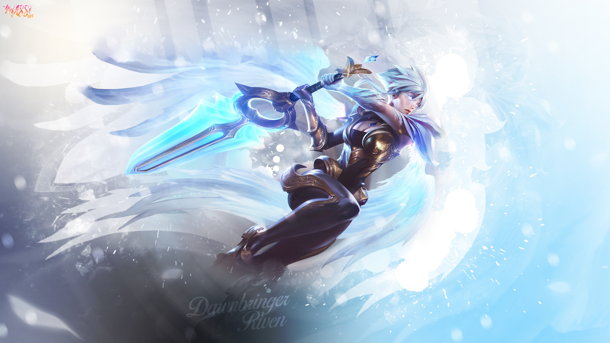

About me:
My name is Jiahang Li, you can also call me Garry. This website is created for my SI 539 web design course. I am a master student at the University of Michigan in Electrical & Computer Science Department. I mainly focus on the Computer Vision area. Previously, I got a bachelor degree as a mechanical engineer. But I found that I love more about programming and coding instead of analyzing the forces and energy, because I always know what I am doing and it's easier to get a sense of achievement. So I processed the dual degree in EECS. Besides my interests in computer vision and machine learning, I also have passion in self-driving cars and the robots perception and control filed.
I mainly take courses at Electrical & Computer Science Department and School of Information. I am a research assistant in 3D microstructure reconstruction and image analysis. In my spare time, I would like to play some video games for relaxing. I am good at playing many games, such as League of Legends, Overwatch, Counter-Strike: Global Offensive,FINAL FANTASY XIV, Monster Hunter series. The picture above shows my favorite hero in League of Legends. Above the game I have mentioned, if they have specific ranks, I always get my rank beyond platinum. I also enjoy night running, I enjoy the feeling that wind gently blows my cheeks. I lost 25 kilograms this way.